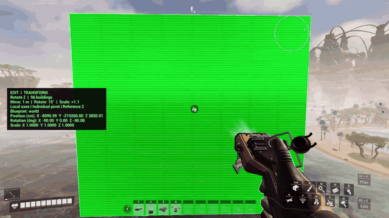
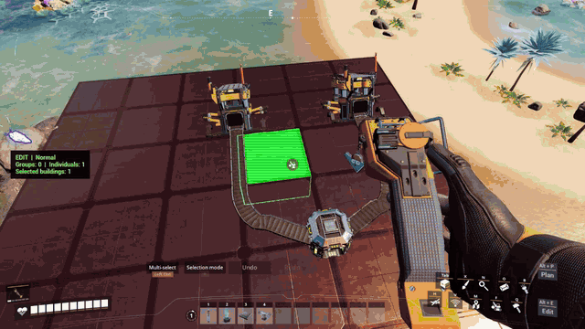
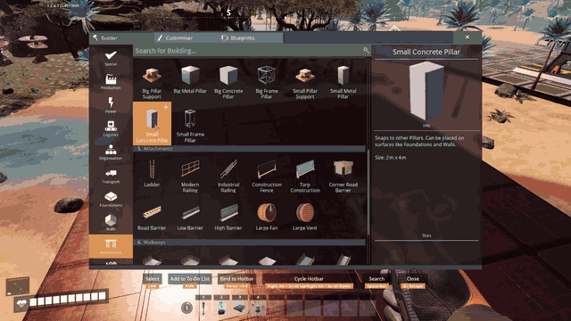
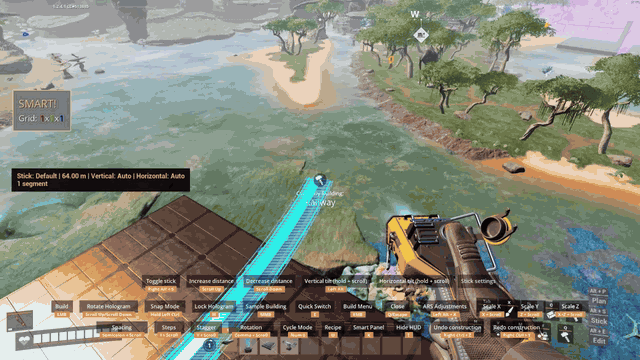
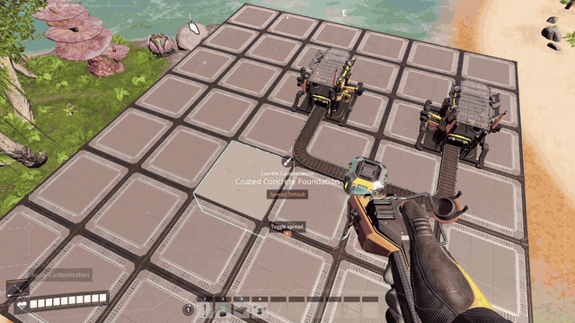
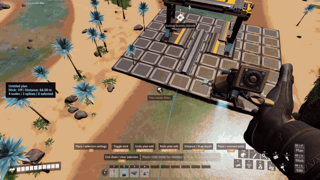

Edit your factory. Plan what comes next.
Group and transform buildings, copy layouts, repeat construction, paint connected structures and plan rail networks.
Alt+E opens Edit. Alt+P opens Plan. K opens tool settings.
Quick gameplay previews, shortened where useful. Save/Copy, Stick and Rail Planning are sped up. Follow the guides for controls and limitations. This local preview loads the GIFs from this folder; the public page draft is OVERVIEW.md.
Transform individual buildings or whole selections.

Save a blueprint or copy straight into a placement hologram.

Mirror or rotate construction, with previews of the resulting copies.

Control distance, tilt, slope and radius. Split long routes into connected segments.

Preview and apply materials or swatches to matching connected buildings.

Draw and edit a route, then build it with parallel tracks and block signals.
